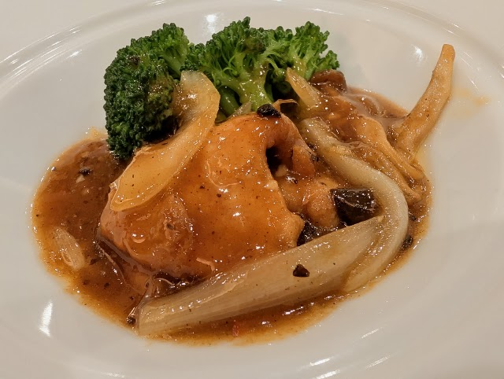
| 営業時間 | 火・水・木・金 11:00〜15:00, 17:00〜22:00 ／ 土・日 11:00〜22:00 |
|---|---|
| 定休日 | 月曜 |
| 住所 | 神奈川県横浜市中区山下町１５３ |
| 予約 | 可 — ☎ 045-681-4004 ／ 公式サイト |
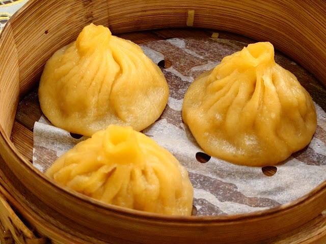
| 営業時間 | 月・火・水・木・金 11:30〜16:00, 17:00〜21:30 ／ 土・日 11:30〜21:30 |
|---|---|
| 定休日 | なし(要最終確認) |
| 住所 | 神奈川県横浜市中区山下町１９１ |
| 予約 | 可 — ☎ 045-641-8888 ／ 公式サイト |
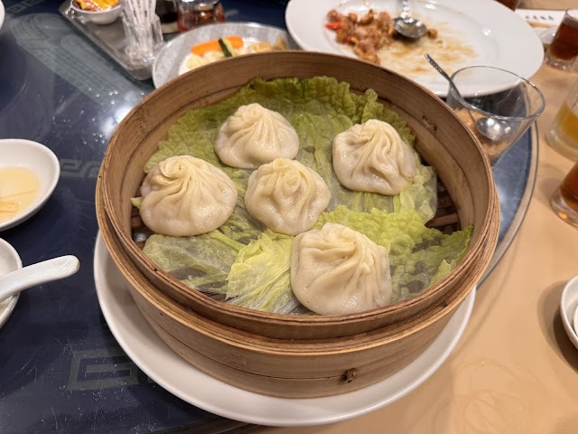
| 営業時間 | 月・火・水・木・金・土・日 11:30〜21:30 |
|---|---|
| 定休日 | なし(要最終確認) |
| 住所 | 神奈川県横浜市中区山下町７９−５ |
| 予約 | 可 — ☎ 050-5484-6044 ／ 公式サイト |
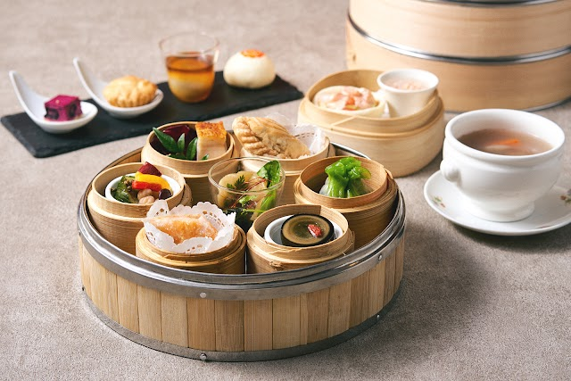
| 営業時間 | 月・水・木・金 11:30〜14:00, 17:00〜20:00 ／ 土・日 11:00〜14:30, 17:00〜20:00 |
|---|---|
| 定休日 | 火曜 |
| 住所 | 神奈川県横浜市中区山下町１９２ |
| 予約 | 可 — ☎ 050-3196-2794 ／ 公式サイト |
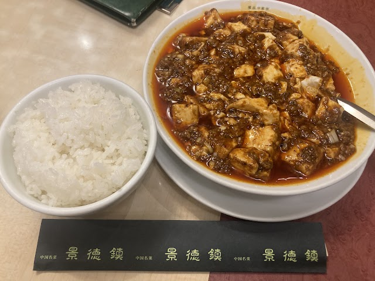
| 営業時間 | 月・火・水・木・金 11:30〜22:00 ／ 土・日 11:00〜22:00 |
|---|---|
| 定休日 | なし(要最終確認) |
| 住所 | 神奈川県横浜市中区山下町190番地 |
| 予約 | 可 — ☎ 045-641-4688 ／ 公式サイト |
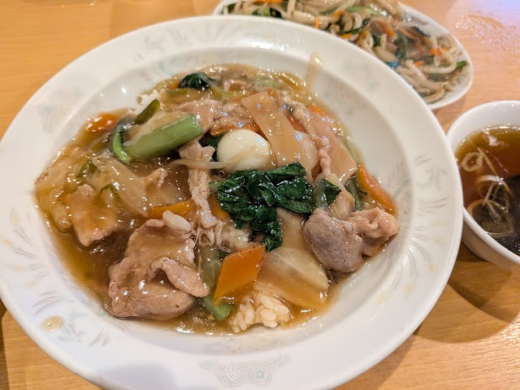
| 営業時間 | 月・日 11:00〜19:00 ／ 火・水・木・金・土 11:00〜20:00 |
|---|---|
| 定休日 | なし(要最終確認) |
| 住所 | 神奈川県横浜市西区南幸１丁目５−２４ 新相鉄ビル 1階 |
| 予約 | 要確認 — ☎ 045-319-2726 ／ 公式サイト |
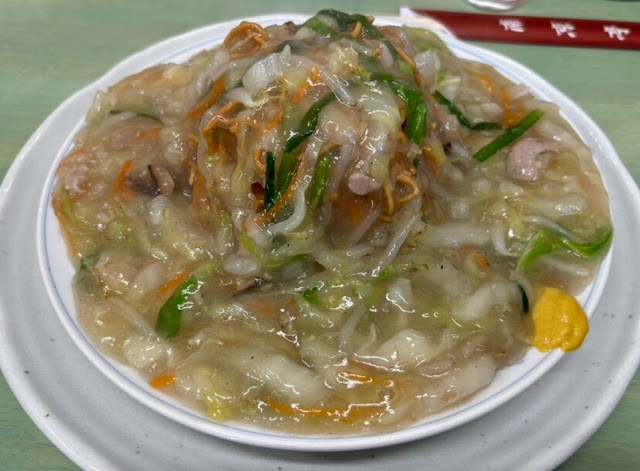
| 営業時間 | 月・火・金・土・日 11:30〜15:00, 17:00〜19:00 ／ 木 11:30〜15:00 |
|---|---|
| 定休日 | 水曜 |
| 住所 | 神奈川県横浜市神奈川区西神奈川１丁目２０−４ |
| 予約 | 要確認 — ☎ 045-432-0880 |
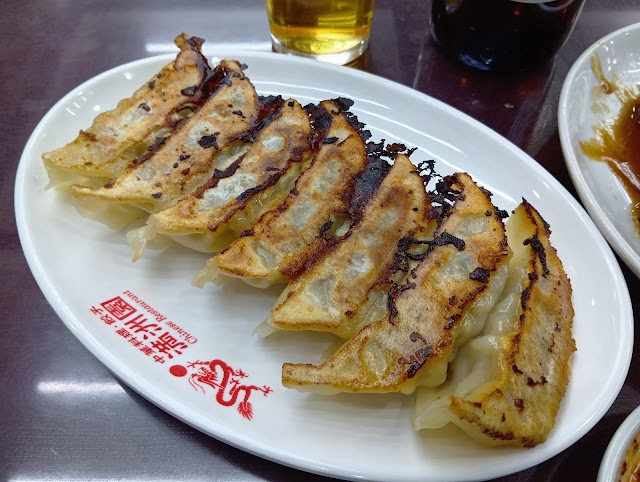
| 営業時間 | 月・火・水・木・金・土・日 11:00〜23:00 |
|---|---|
| 定休日 | なし(要最終確認) |
| 住所 | 神奈川県横浜市鶴見区豊岡町２−２ |
| 予約 | 可 — ☎ 045-571-1198 ／ 公式サイト |
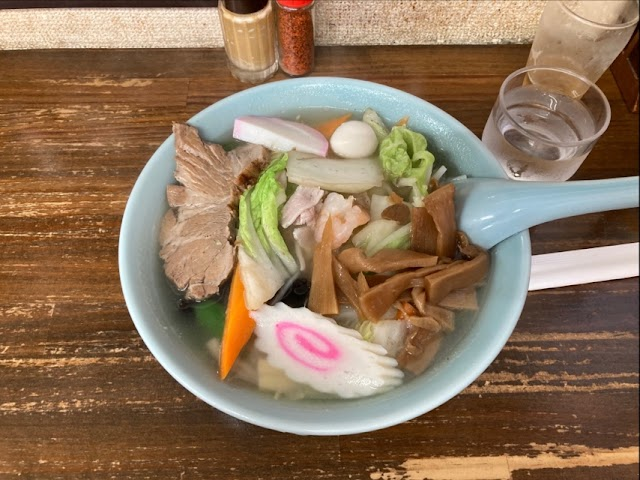
| 営業時間 | 火・木・金 11:00〜14:30 ／ 水・土・日 11:00〜14:30, 16:30〜20:00 |
|---|---|
| 定休日 | 月曜 |
| 住所 | 神奈川県横浜市南区通町４丁目１１２ |
| 予約 | 要確認 |
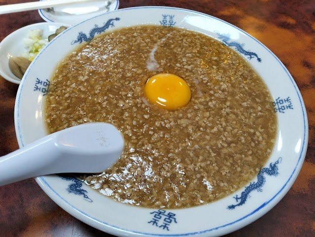
| 営業時間 | 月・火・水・木・金・土 11:30〜19:00 |
|---|---|
| 定休日 | 日曜 |
| 住所 | 神奈川県横浜市瀬谷区三ツ境１３−５ |
| 予約 | 要確認 — ☎ 045-391-5288 |
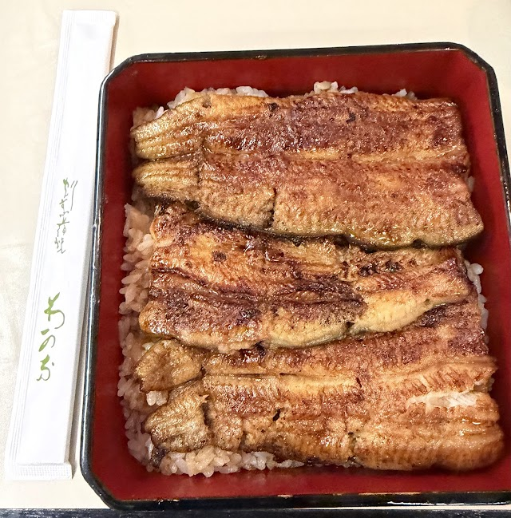
| 営業時間 | 月・火・木・金・土・日 11:00〜21:00 |
|---|---|
| 定休日 | 水曜 |
| 住所 | 神奈川県横浜市中区港町５丁目２０ |
| 予約 | 可 — ☎ 045-681-1404 ／ 公式サイト |
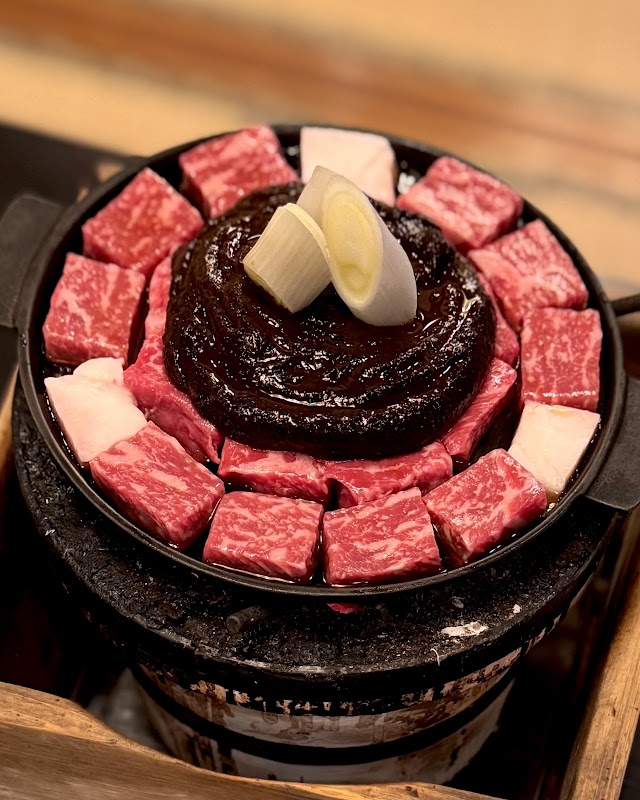
| 営業時間 | 火・水・木・金 17:00〜21:00 ／ 土・日 12:00〜15:00, 17:00〜21:00 |
|---|---|
| 定休日 | 月曜 |
| 住所 | 神奈川県横浜市中区末吉町１丁目１５ |
| 予約 | 可 — ☎ 045-261-0636 ／ 公式サイト |
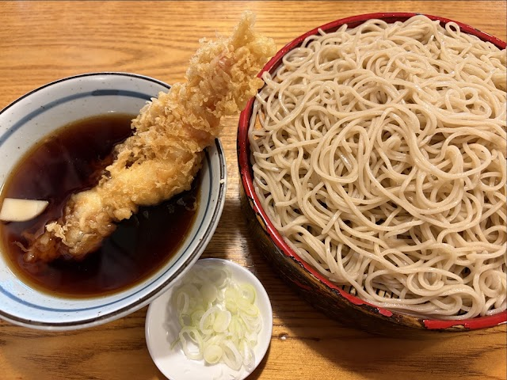
| 営業時間 | 月・水・木・金・土・日 11:00〜20:30 |
|---|---|
| 定休日 | 火曜 |
| 住所 | 神奈川県横浜市西区平沼１丁目３６−２ |
| 予約 | 可 — ☎ 045-321-4341 ／ 公式サイト |
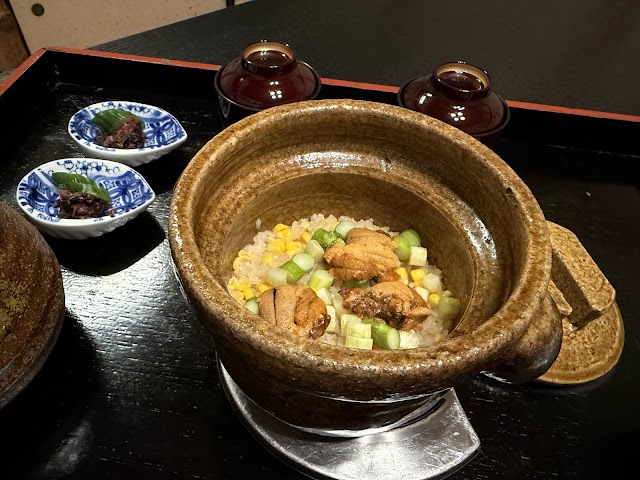
| 営業時間 | 月・火・水・木・金・土・日 11:30〜14:00, 17:00〜22:00 |
|---|---|
| 定休日 | なし(要最終確認) |
| 住所 | 神奈川県横浜市神奈川区台町１１−１ |
| 予約 | 可 — ☎ 045-311-2621 ／ 公式サイト |
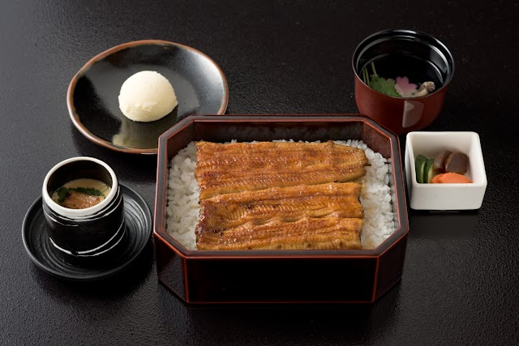
| 営業時間 | 月・木・金 11:00〜15:00, 17:00〜21:30 ／ 土・日 11:00〜21:30 |
|---|---|
| 定休日 | 火・水曜 |
| 住所 | 神奈川県横浜市港北区高田東３丁目４−１１ |
| 予約 | 可 — ☎ 045-549-0880 ／ 公式サイト |
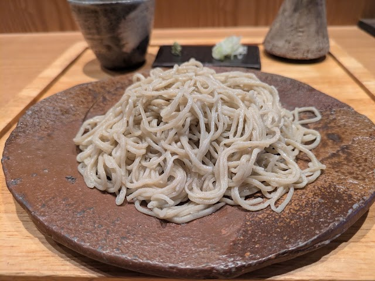
| 営業時間 | 月 11:30〜15:00 ／ 木・金・土・日 11:30〜15:00, 18:00〜21:30 |
|---|---|
| 定休日 | 火・水曜 |
| 住所 | 神奈川県横浜市青葉区新石川３丁目１３−２６ |
| 予約 | 可 — ☎ 045-507-7803 ／ 公式サイト |
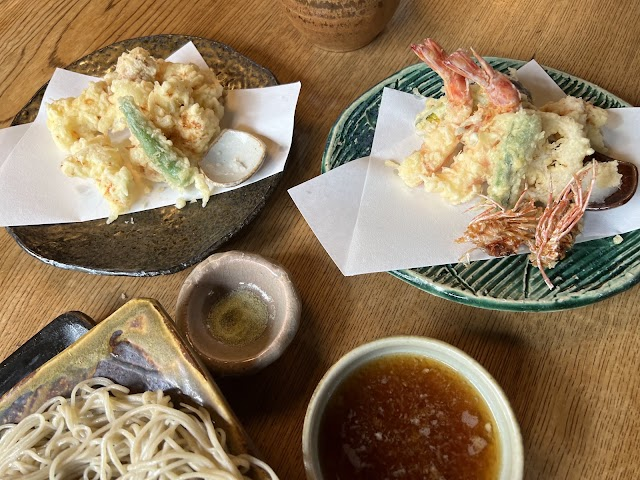
| 営業時間 | 火・水・木・金・土・日 11:30〜21:00 |
|---|---|
| 定休日 | 月曜 |
| 住所 | 神奈川県横浜市栄区田谷町１３１９ |
| 予約 | 可 — ☎ 045-851-6121 ／ 公式サイト |
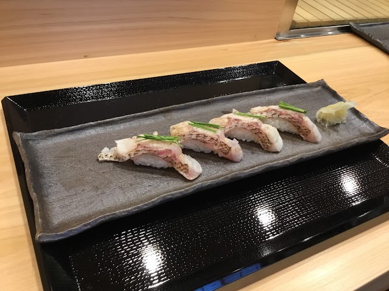
| 営業時間 | 火・水・木・金・土・日 11:30〜13:30, 17:30〜21:00 |
|---|---|
| 定休日 | 月曜 |
| 住所 | 神奈川県横浜市金沢区金沢区町屋町１９−９ |
| 予約 | 可 — ☎ 045-701-3969 ／ 公式サイト |
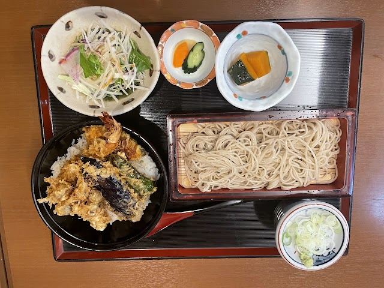
| 営業時間 | 月・火・金・土・日 11:00〜14:30, 17:00〜19:30 |
|---|---|
| 定休日 | 水・木曜 |
| 住所 | 神奈川県横浜市戸塚区舞岡町３１１３ |
| 予約 | 要確認 — ☎ 045-823-2110 ／ 公式サイト |
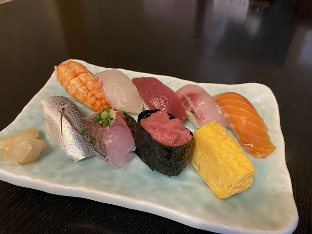
| 営業時間 | 月・火・水・木・金・土・日 11:00〜15:00, 17:00〜22:00 |
|---|---|
| 定休日 | なし(要最終確認) |
| 住所 | 神奈川県横浜市磯子区森３丁目３−１７ |
| 予約 | 可 — ☎ 045-753-5333 ／ 公式サイト |
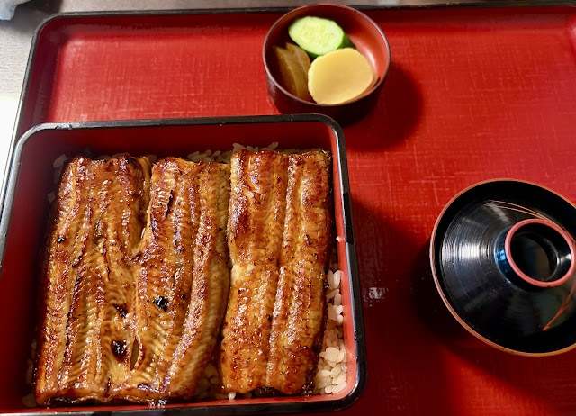
| 営業時間 | 水・木・金 11:00〜14:30 ／ 土・日 11:00〜14:30, 17:00〜20:30 |
|---|---|
| 定休日 | 月・火曜 |
| 住所 | 神奈川県横浜市都筑区南山田２丁目２３−８ |
| 予約 | 可 — ☎ 045-593-4507 ／ 公式サイト |
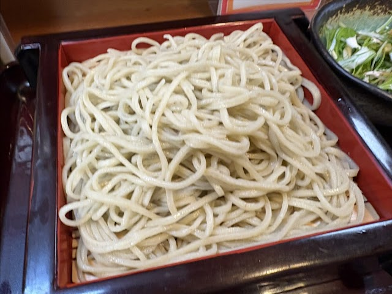
| 営業時間 | 月・火・水・日 11:30〜15:00, 17:30〜21:00 ／ 金・土 11:30〜15:00, 17:30〜21:30 |
|---|---|
| 定休日 | 木曜 |
| 住所 | 神奈川県横浜市旭区柏町４７−１０ |
| 予約 | 可 — ☎ 045-362-6577 |
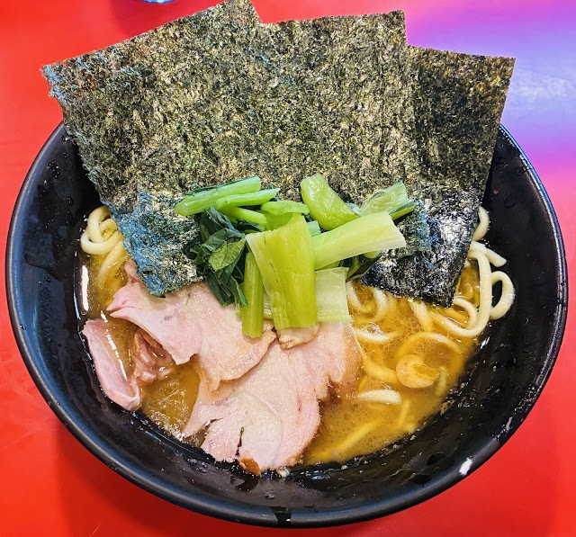
| 営業時間 | 火・水・木・金・土・日 11:00〜20:00 |
|---|---|
| 定休日 | 月曜 |
| 住所 | 神奈川県横浜市西区岡野１丁目６−４ |
| 予約 | 要確認 — ☎ 045-322-9988 ／ 公式サイト |
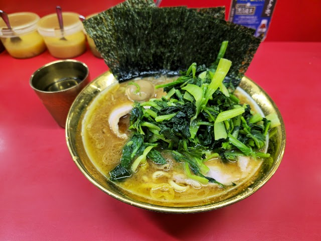
| 営業時間 | 月・火・水・木・金・土 5:00〜22:30 |
|---|---|
| 定休日 | 日曜 |
| 住所 | 神奈川県横浜市磯子区新杉田町３−５ |
| 予約 | 要確認 — ☎ 045-776-2155 ／ 公式サイト |
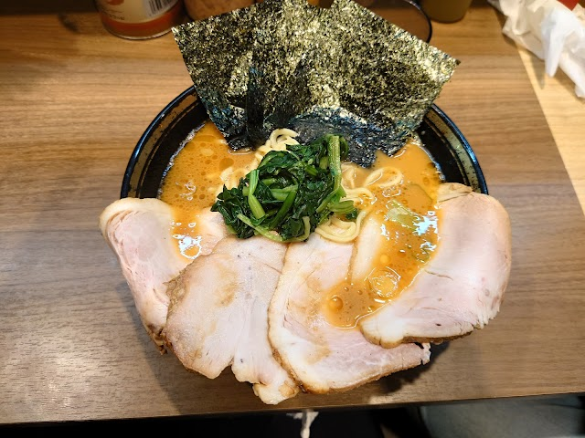
| 営業時間 | 火・水・木・金・土 11:00〜21:00 |
|---|---|
| 定休日 | 月・日曜 |
| 住所 | 神奈川県横浜市神奈川区六角橋１丁目１４−７ |
| 予約 | 要確認 — ☎ 045-642-3400 ／ 公式サイト |
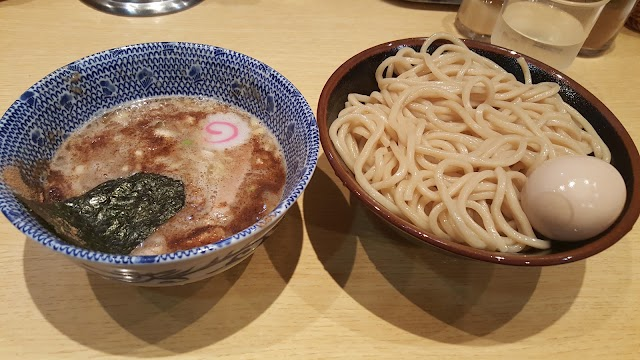
| 営業時間 | 月・火・水・木・金 11:00〜14:30, 17:00〜20:30 ／ 土・日 11:00〜20:30 |
|---|---|
| 定休日 | なし(要最終確認) |
| 住所 | 神奈川県横浜市神奈川区六角橋１丁目１７−２９ |
| 予約 | 要確認 — ☎ 045-421-0537 ／ 公式サイト |
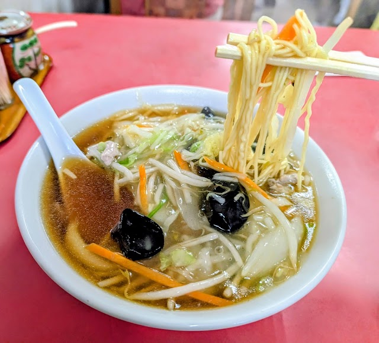
| 営業時間 | 月・水・木・金・土・日 11:00〜21:00 |
|---|---|
| 定休日 | 火曜 |
| 住所 | 神奈川県横浜市中区伊勢佐木町５丁目１２７ |
| 予約 | 要確認 — ☎ 045-251-5630 |
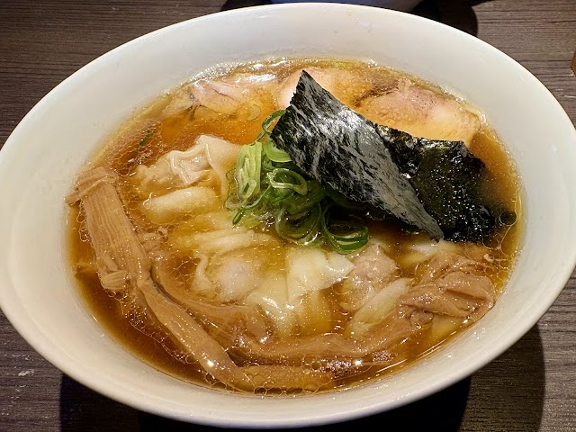
| 営業時間 | 月・火・木・金・土・日 11:00〜20:30 |
|---|---|
| 定休日 | 水曜 |
| 住所 | 神奈川県横浜市戸塚区戸塚町６００２−２ |
| 予約 | 要確認 — ☎ 045-827-3739 ／ 公式サイト |
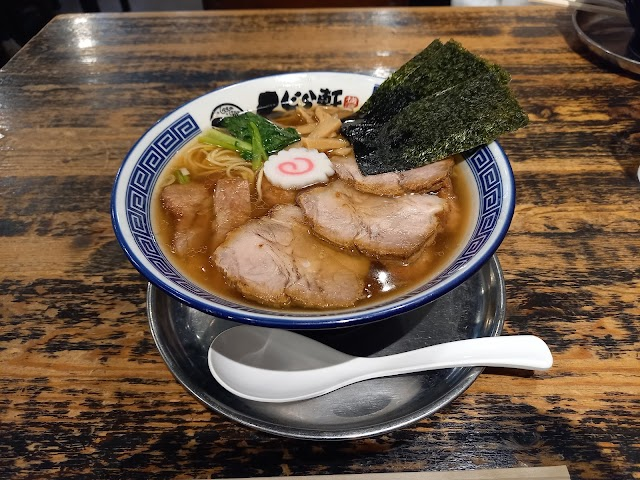
| 営業時間 | 水・木・金・土・日 11:30〜15:00, 17:00〜20:30 |
|---|---|
| 定休日 | 月・火曜 |
| 住所 | 神奈川県横浜市都筑区牛久保西１丁目２−１０ |
| 予約 | 要確認 — ☎ 045-912-3384 |
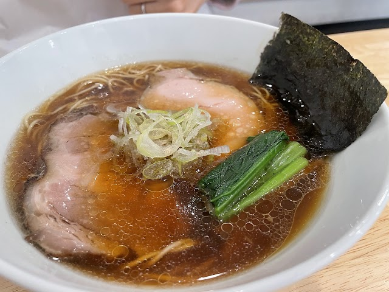
| 営業時間 | 火・水・木・金・土 11:30〜14:45, 18:00〜21:00 |
|---|---|
| 定休日 | 月・日曜 |
| 住所 | 神奈川県横浜市金沢区谷津町３４７−１０１ |
| 予約 | 要確認 — 公式サイト |
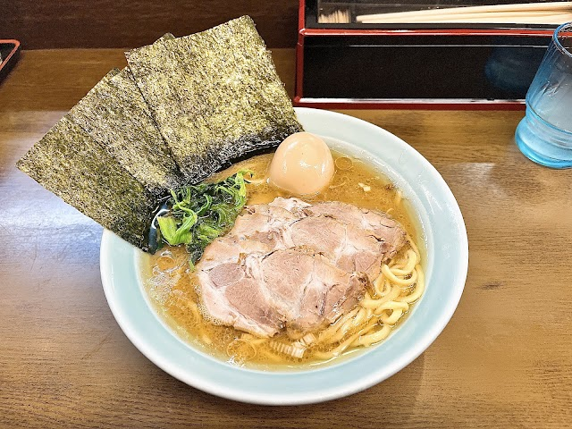
| 営業時間 | 月・火・木・金・土・日 11:00〜21:00 |
|---|---|
| 定休日 | 水曜 |
| 住所 | 神奈川県横浜市保土ケ谷区上星川２丁目３−１ |
| 予約 | 要確認 — ☎ 045-371-6180 ／ 公式サイト |
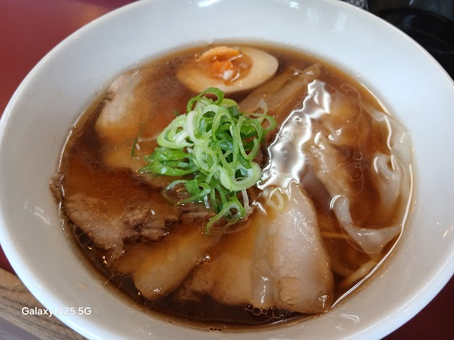
| 営業時間 | 水・木・金・土・日 5:00〜9:00, 11:00〜15:00 |
|---|---|
| 定休日 | 月・火曜 |
| 住所 | 神奈川県横浜市鶴見区潮田町２丁目87−３ 本田ハイツ 104 |
| 予約 | 要確認 — 公式サイト |
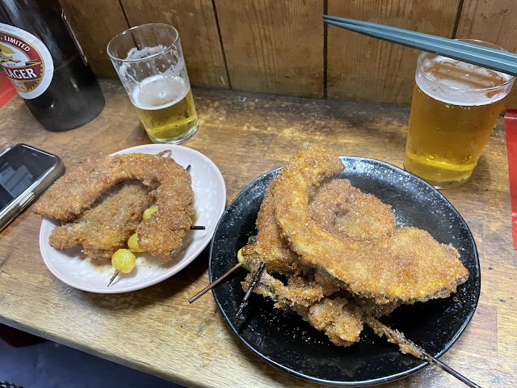
| 営業時間 | 火・水・木・金・土 16:30〜21:45 ／ 日 15:00〜20:00 |
|---|---|
| 定休日 | 月曜 |
| 住所 | 神奈川県横浜市中区野毛町２丁目７１ |
| 予約 | 要確認 |
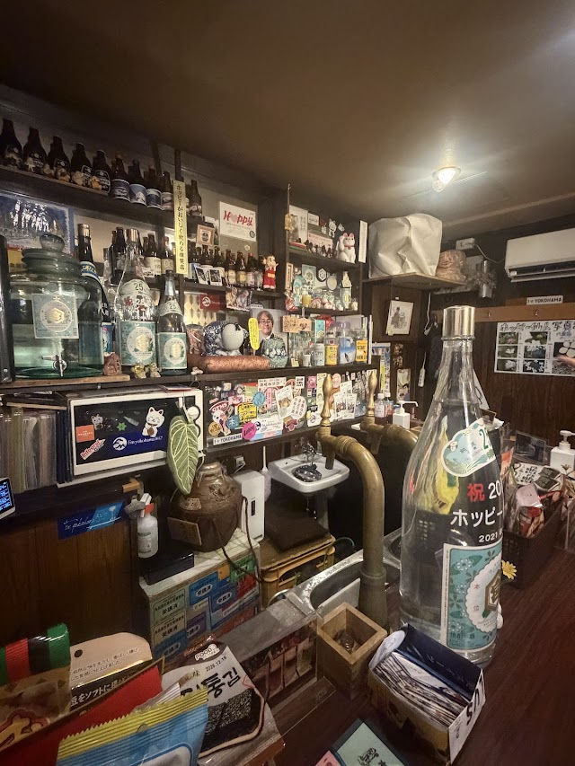
| 営業時間 | 月・火・金・土 18:00〜20:00 |
|---|---|
| 定休日 | 水・木・日曜 |
| 住所 | 神奈川県横浜市中区野毛町１丁目１−２１４ |
| 予約 | 要確認 — ☎ 045-242-1731 ／ 公式サイト |
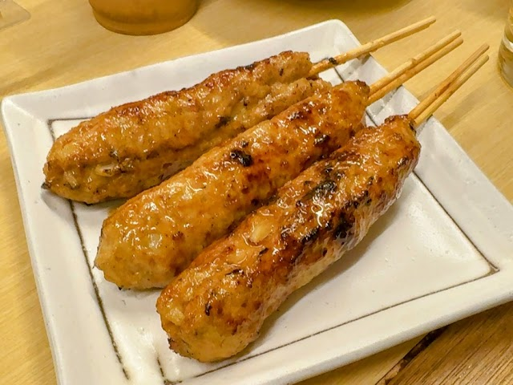
| 営業時間 | 火・水・木・金・土・日 16:00〜23:00 |
|---|---|
| 定休日 | 月曜 |
| 住所 | 神奈川県横浜市中区野毛町１丁目２４ |
| 予約 | 可 — ☎ 045-231-5642 |
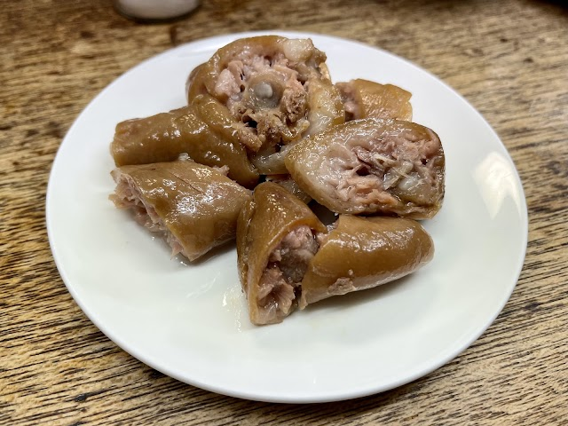
| 営業時間 | 月・火・水・木・金 16:00〜22:00 ／ 土 15:00〜22:00 |
|---|---|
| 定休日 | 日曜 |
| 住所 | 神奈川県横浜市西区南幸１丁目２−２ |
| 予約 | 可 — ☎ 045-312-4027 ／ 公式サイト |
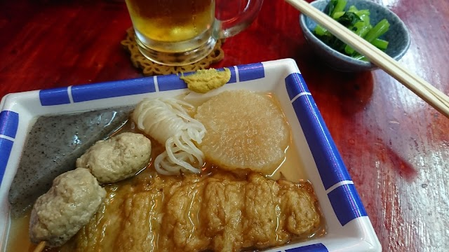
| 営業時間 | 月・火・水・木・金・土・日 15:00〜20:30 |
|---|---|
| 定休日 | なし(要最終確認) |
| 住所 | 神奈川県横浜市神奈川区六角橋１丁目９−２ |
| 予約 | 要確認 — ☎ 045-431-5909 ／ 公式サイト |
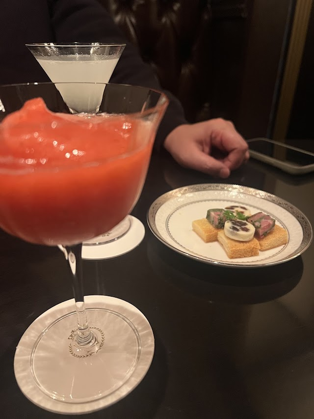
| 営業時間 | 月・火・水・木・金・土・日 17:30〜0:30 |
|---|---|
| 定休日 | なし(要最終確認) |
| 住所 | 神奈川県横浜市神奈川区鶴屋町２丁目１５ クレインヨコハマ 5階 |
| 予約 | 可 — ☎ 045-620-2238 ／ 公式サイト |
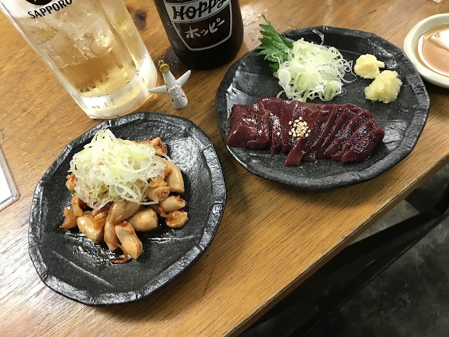
| 営業時間 | 月・水・木・金 16:00〜21:00 ／ 土・日 15:00〜21:00 |
|---|---|
| 定休日 | 火曜 |
| 住所 | 神奈川県横浜市鶴見区鶴見中央２丁目９−１５ |
| 予約 | 要確認 — ☎ 045-947-3921 ／ 公式サイト |
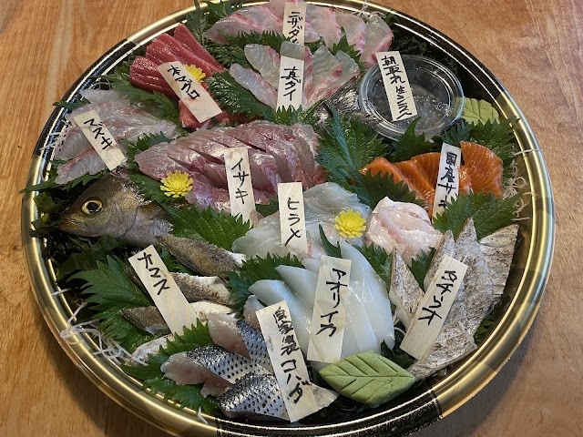
| 営業時間 | 月・火・水・木・金・土・日 10:30〜18:00 |
|---|---|
| 定休日 | なし(要最終確認) |
| 住所 | 神奈川県横浜市港北区綱島西２丁目６−２７ |
| 予約 | 要確認 — ☎ 045-716-8608 ／ 公式サイト |
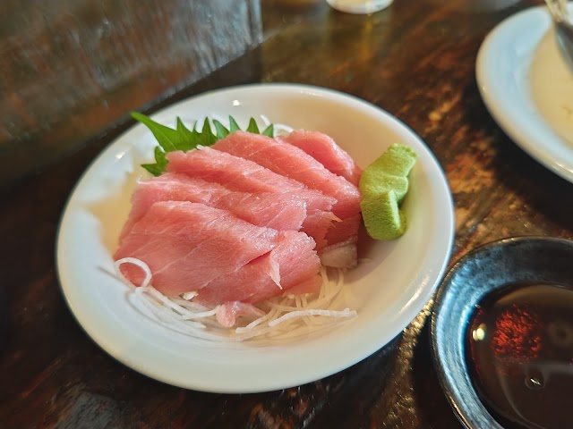
| 営業時間 | 月・火・水・木・金・土・日 10:00〜22:00 |
|---|---|
| 定休日 | なし(要最終確認) |
| 住所 | 神奈川県横浜市港南区上大岡西１丁目１５−１ |
| 予約 | 要確認 — ☎ 045-843-5964 ／ 公式サイト |
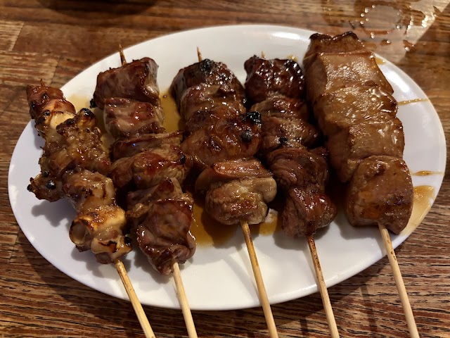
| 営業時間 | 月・火・水・木・金・土 16:00〜23:00 ／ 日 15:00〜0:00 |
|---|---|
| 定休日 | なし(要最終確認) |
| 住所 | 神奈川県横浜市南区榎町２丁目36−３６ |
| 予約 | 可 — ☎ 045-714-0218 ／ 公式サイト |
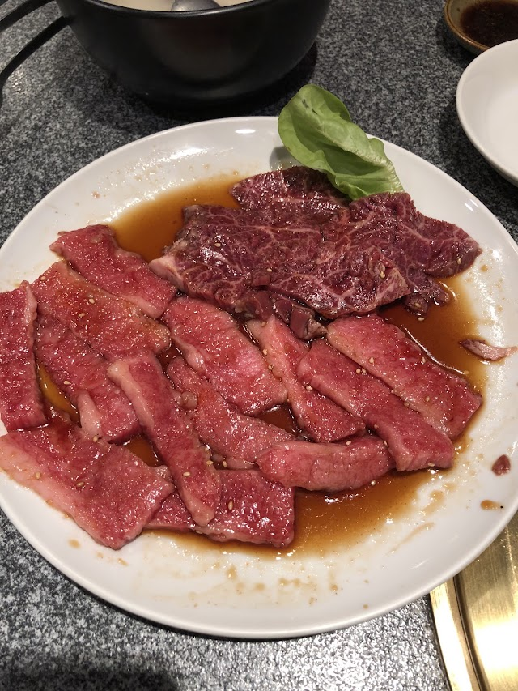
| 営業時間 | 月・火・木・金・土・日 17:00〜23:00 |
|---|---|
| 定休日 | 水曜 |
| 住所 | 神奈川県横浜市磯子区森３丁目３−１７ 横浜森町分譲共同ビル |
| 予約 | 可 — ☎ 045-753-6688 |
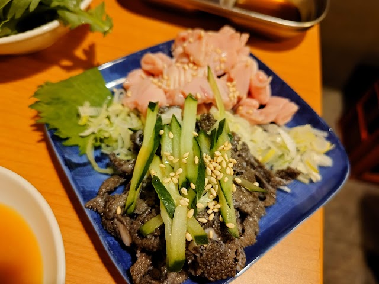
| 営業時間 | 月・火・水・木・金・土・日 16:30〜23:00 |
|---|---|
| 定休日 | なし(要最終確認) |
| 住所 | 神奈川県横浜市金沢区谷津町 |
| 予約 | 要確認 |
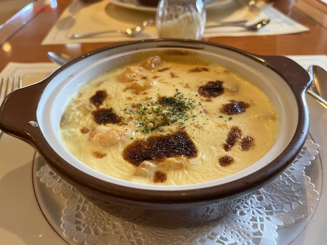
| 営業時間 | 月・火・水・木・金・土・日 10:00〜21:30 |
|---|---|
| 定休日 | なし(要最終確認) |
| 住所 | 神奈川県横浜市中区山下町１０ ホテル ニューグランド本館 1F |
| 予約 | 可 — ☎ 045-681-1841 ／ 公式サイト |
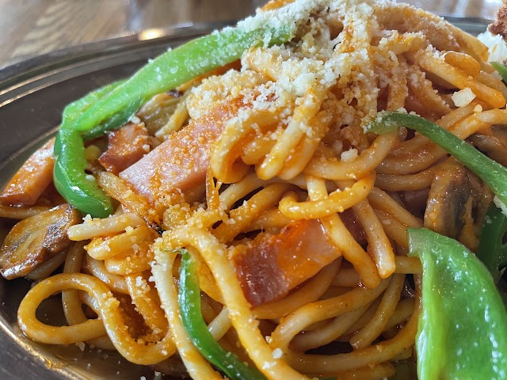
| 営業時間 | 火・水・木・金・土・日 11:00〜19:30 |
|---|---|
| 定休日 | 月曜 |
| 住所 | 神奈川県横浜市中区花咲町１丁目９ |
| 予約 | 可 — ☎ 045-241-7327 ／ 公式サイト |
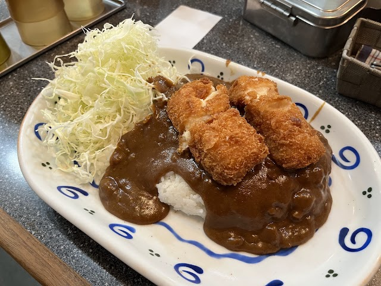
| 営業時間 | 月・火・水・木・金・土 11:00〜21:30 |
|---|---|
| 定休日 | 日曜 |
| 住所 | 神奈川県横浜市西区戸部町７丁目２３１−１ エルストーク １階 |
| 予約 | 要確認 — ☎ 045-316-8989 ／ 公式サイト |
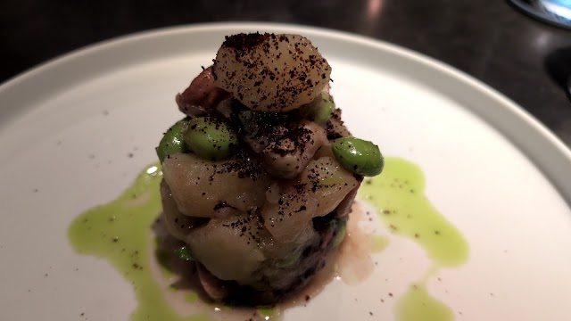
| 営業時間 | 月・火・水 19:00〜23:00 ／ 木・金・土 12:00〜15:00, 19:00〜23:00 |
|---|---|
| 定休日 | 日曜 |
| 住所 | 神奈川県横浜市神奈川区神奈川２丁目１−１ |
| 予約 | 可 — ☎ 045-577-6500 ／ 公式サイト |
| 営業時間 | 月・火・水・木・金 10:00〜22:00 ／ 土・日 9:00〜22:00 |
|---|---|
| 定休日 | なし(要最終確認) |
| 住所 | 神奈川県横浜市鶴見区仲通２丁目６０−１５ 小松原ハイツ |
| 予約 | 可 — ☎ 045-504-7035 ／ 公式サイト |
| 営業時間 | 月・火・金・土・日 11:00〜14:30 |
|---|---|
| 定休日 | 水・木曜 |
| 住所 | 神奈川県横浜市鶴見区仲通３丁目７４−１４ |
| 予約 | 要確認 — ☎ 045-506-4774 ／ 公式サイト |
| 営業時間 | 月・土 11:00〜14:30, 17:30〜19:00 ／ 火 11:00〜14:30, 18:00〜19:00 ／ 水・金 11:00〜14:30, 17:00〜19:00 ／ 木 11:00〜14:00, 17:30〜19:00 |
|---|---|
| 定休日 | 日曜 |
| 住所 | 神奈川県横浜市南区高根町４丁目２７ |
| 予約 | 可 — ☎ 045-231-4156 |
| 営業時間 | 火・水・木・金・土・日 11:00〜16:00 |
|---|---|
| 定休日 | 月曜 |
| 住所 | 神奈川県横浜市磯子区丸山２丁目２０−１０ コーラル磯子 |
| 予約 | 可 — ☎ 045-753-9702 ／ 公式サイト |
| 営業時間 | 月・水・木・金 11:30〜14:30, 18:00〜21:00 ／ 土・日 11:30〜14:30, 17:30〜21:00 |
|---|---|
| 定休日 | 火曜 |
| 住所 | 神奈川県横浜市港北区大倉山１丁目２９−１７ Sビル 2F |
| 予約 | 可 — ☎ 045-717-6388 ／ 公式サイト |
| 営業時間 | 水・木・金・土・日 11:30〜14:30, 17:30〜21:30 |
|---|---|
| 定休日 | 月・火曜 |
| 住所 | 神奈川県横浜市青葉区つつじが丘１０−１８ |
| 予約 | 要確認 — ☎ 045-982-6266 |
| 営業時間 | 月・火・木・金・土・日 11:00〜14:30, 17:30〜21:00 |
|---|---|
| 定休日 | 水曜 |
| 住所 | 神奈川県横浜市都筑区中川中央１丁目２８−２１ リヴウェル |
| 予約 | 可 — ☎ 045-911-6563 |
| 営業時間 | 月・水・木・金 11:00〜14:00, 18:00〜20:00 ／ 火 11:00〜14:00 |
|---|---|
| 定休日 | 土・日曜 |
| 住所 | 神奈川県横浜市戸塚区戸塚町１８７−８ |
| 予約 | 要確認 |
| 営業時間 | 火・水・木・金・土・日 9:00〜19:00 |
|---|---|
| 定休日 | 月曜 |
| 住所 | 神奈川県横浜市中区元町１丁目５０ |
| 予約 | 要確認 — ☎ 045-641-1161 ／ 公式サイト |
| 営業時間 | 月・火・水・木・金・土・日 10:15〜18:30 |
|---|---|
| 定休日 | なし(要最終確認) |
| 住所 | 神奈川県横浜市中区元町２丁目８６ |
| 予約 | 要確認 — ☎ 045-641-0545 ／ 公式サイト |
| 営業時間 | 月・木・金・土・日 11:30〜19:00 |
|---|---|
| 定休日 | 火・水曜 |
| 住所 | 神奈川県横浜市神奈川区六角橋１丁目９−２ |
| 予約 | 要確認 — ☎ 045-432-4185 ／ 公式サイト |
| 営業時間 | 月・火・水・木・金・土 8:30〜18:30 |
|---|---|
| 定休日 | 日曜 |
| 住所 | 神奈川県横浜市鶴見区鶴見中央４丁目２８−１８ |
| 予約 | 要確認 — ☎ 045-501-2877 ／ 公式サイト |
| 営業時間 | 月・火・水・木・金・土・日 8:00〜17:00 |
|---|---|
| 定休日 | なし(要最終確認) |
| 住所 | 神奈川県横浜市南区南太田１丁目２７−１０ |
| 予約 | 要確認 — ☎ 045-713-7722 |
| 営業時間 | 火・水・木・金・土・日 8:30〜18:30 |
|---|---|
| 定休日 | 月曜 |
| 住所 | 神奈川県横浜市港北区大倉山２丁目２−１−１１ |
| 予約 | 要確認 — ☎ 045-548-0568 ／ 公式サイト |
| 営業時間 | 月 8:00〜16:00 ／ 木・金・土・日 8:00〜15:00 |
|---|---|
| 定休日 | 火・水曜 |
| 住所 | 神奈川県横浜市青葉区元石川町６３００−７ |
| 予約 | 要確認 — ☎ 045-902-8511 ／ 公式サイト |
| 営業時間 | 月・火・金・土 10:00〜19:00 ／ 日 10:00〜18:00 |
|---|---|
| 定休日 | 水・木曜 |
| 住所 | 神奈川県横浜市都筑区茅ケ崎中央４６−１４ |
| 予約 | 要確認 — ☎ 045-943-2060 ／ 公式サイト |
| 営業時間 | 月・火・金・土・日 10:00〜20:00 |
|---|---|
| 定休日 | 水・木曜 |
| 住所 | 神奈川県横浜市金沢区大川７−４ レイディアントシティ横濱カルティエ4 |
| 予約 | 要確認 — ☎ 045-786-0558 ／ 公式サイト |
| 営業時間 | 水・木・金・土・日 10:00〜17:00 |
|---|---|
| 定休日 | 月・火曜 |
| 住所 | 神奈川県横浜市港南区上大岡東２丁目４２−１９ |
| 予約 | 要確認 — ☎ 045-842-3021 |
| 営業時間 | 月・火・水・木・金・土・日 8:00〜18:00 |
|---|---|
| 定休日 | なし(要最終確認) |
| 住所 | 神奈川県横浜市旭区南本宿町３２−１６ サンドミール永野 |
| 予約 | 要確認 — ☎ 045-352-6345 ／ 公式サイト |
| 営業時間 | 月・火・木・金・土・日 9:00〜17:00 |
|---|---|
| 定休日 | 水曜 |
| 住所 | 神奈川県横浜市保土ケ谷区新井町４６１−６ |
| 予約 | 要確認 — ☎ 045-381-0596 |
本ガイドは個人利用目的で作成。掲載情報は2026年8月時点の調査に基づく。写真出典: Google Maps投稿写真(©各投稿者/Google)。